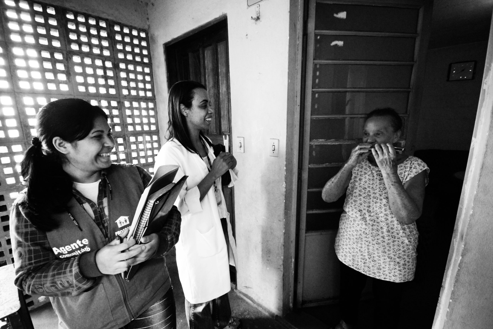
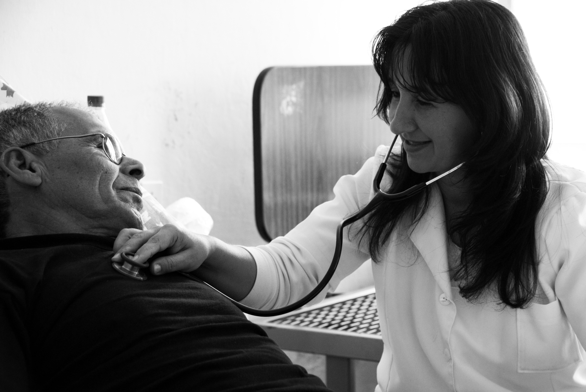
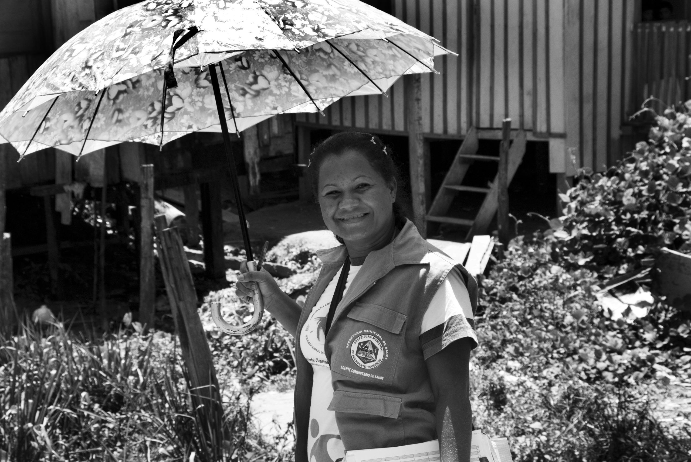

Fotos: Radilson Carlos Gomes, Fotógrafo do SUS.
ELA AINDA ESTÁ NO MEIO DA CONVERSA QUANDO PRECISA SEGUIR PRA PRÓXIMA CASA.
A porta só abriu porque ela é vizinha de quem mora ali. Isso, nenhuma ficha de visita registra.



